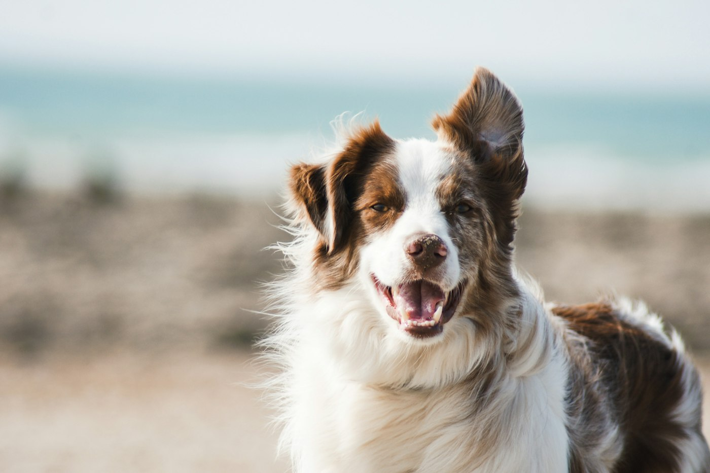

Consulta, vacunas, desparasitación y alimento para tu perro o gato en el centro de Chicoloapan. Abrimos los 7 días, también fines de semana.
Agendar por WhatsApp55 9165 4935
Cuidado completo para tu mejor amigo.
Revisión, diagnóstico y tratamiento con explicación clara.
Esquemas para cachorros, gatitos y refuerzos anuales.
Interna y externa, con recordatorios.
Croquetas, latas y premios para cada etapa.
Farmacia veterinaria para continuar el tratamiento en casa.
Te acompañamos hasta que tu mascota esté al 100%.
Desde Av. Libertad atendemos a las familias de la Cabecera Municipal con trato amable, precios accesibles y la confianza de más de cien reseñas en Google.
✔ Abierto lunes a domingo
✔ Consulta y tienda en el mismo lugar
✔ Ubicación céntrica
Calificación 4.2 ★ con más de 100 opiniones
★★★★★
“Atienden con mucha paciencia y cariño a mi perrito.”
— Cliente en Google★★★★★
“Buenos precios en vacunas y siempre tienen alimento.”
— Cliente en Google★★★★☆
“Muy práctico que abran en fin de semana. Recomendados.”
— Cliente en Google📍 Dirección: Av. Libertad 56, Cabecera Municipal, 56370 Chicoloapan de Juárez, Edo. Méx.
📞 Teléfono: 55 9165 4935
| Lunes a viernes | 15:00 – 20:00 |
| Sábado y domingo | 12:00 – 18:30 |